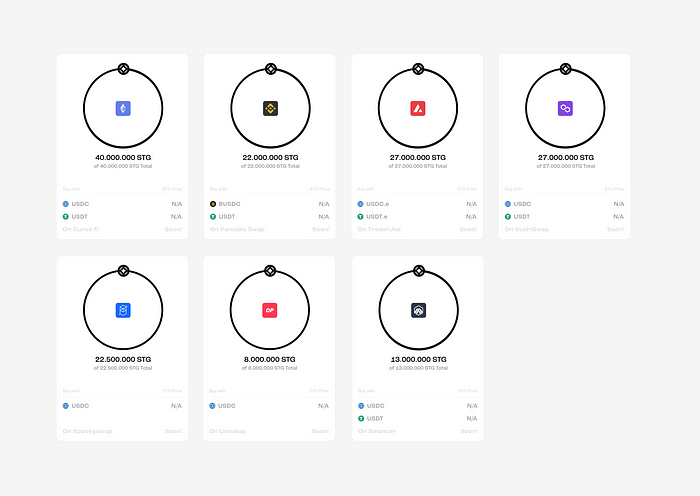

About Lybra finance?
Lybra finance is a decentralized finance (DeFi) project that focuses on Ethereum 2.0 staking. Ethereum 2.0, also known as ETH 2.0 or Serenity, is anupgrade to the Ethereum network that aims to transition from a proof-of-work(PoW) consensus mechanism to proof-of-stake (PoS). Staking involves locking upa certain amount of cryptocurrency to support network operations and earn rewards in return.
The omnichain universe is here to stay, but the infrastructure is fragmented. For bridging, the focus is on user driven asset movement between chains. Although this sounds like an intuitive approach, it’s actually far from practical. For example if you want to yield farm on a hot new chain you must swap your assets to a bridgeable asset, bridge, and then farm all in a 20+ click multi-transaction session. In an ideal world you could swap, bridge and farm all in one transaction from the source chain.
Introducing Stargate, the first and only bridge to solve the Bridging Trilemma, unlocking seamless composability; enabling the wrapping of all existing DeFi applications. For example, the video below shows how you could wrap Stargate and Uniswap to perform an any asset to any asset swap in a single click between chains.
Launch
In two days (March 17th), Stargate’s liquidity generation event begins, leading off with an auction followed by Stargate going live with a simultaneous bonding curve. All funds raised during the event will be owned by the protocol.
Auction
- Starts 12pm EDT March 17th, 2022 on https://stargate.finance
- 100M STG tokens available (10% of total supply) [MetaMask & WalletConnect supported]
- Auction ends when $25M USDC has been purchased or after 48 hours have elapsed, whichever comes first, making the maximum price per token $0.25
- At the end of the auction the 100M STG is frozen for 12mo followed by 6mo linear unlocking for participants
Here are some key points about Lido staking:
StakingService
Lido provides a staking facility that allows users to staketheir Ethereum (ETH) and receive stETH (Staked Ether) tokens in return. stETHrepresents a claim on the staking rewards generated by the ETH deposited in theLido staking pool.
LiquidStaking
Lido'sapproach to staking is known as "liquid staking." This means thatwhen you stake your ETH with Lido, you receive stETH tokens in return, whichare liquid and can be freely traded or used in other DeFi applications. This isdifferent from traditional staking, where your funds are locked up.
Assuming the auction is sold out within the 48 hours, the collected $25M will be paired with an additional 50M STG and be immediately put into a Curve v2 pool, pricing the token at $0.50/STG with $50M of liquidity depth.
Bonding Curve
Upon conclusion of the auction, Stargate and the bonding curves will go live on all seven chains (Ethereum, Polygon, Avalanche, BNB Chain, Fantom, Arbitrum and Optimism). Assuming the auction phase ends at the hard cap, bonding curves will run from $0.50 - $1.50.
Assuming the auction is sold out within the 48 hours, the collected $25M will be paired with an additional 50M STG and be immediately put into a Curve v2 pool, pricing the token at $0.50/STG with $50M of liquidity depth.
With Stargate live on all seven chains you will be able to swap Stargate enabled assets freely between the chains allowing for everyone to participate in bonding everywhere. The bonding curve will last for 72 hours and the remainder of the tokens will be returned to the protocol.
DecentralizedValidators
Lidouses a network of decentralized validators to stake the ETH on behalf of users.Validators are responsible for participating in the Ethereum PoS network andearning rewards, which are then distributed to stakers in the form of stakingrewards.
EarningRewards
By staking with Lido, you can earn a share of the rewardsgenerated by the validators. These rewards are typically in the form ofadditional stETH tokens, which are automatically credited to your account.
STG
This will conclude the liquidity generation event providing depth for STG on AMMs and protocol owned liquidity for Stargate. STG will be the first Omnichain Fungible Token (OFT), a native token that can freely move between all chains LayerZero exists. This is the first step towards an omnichain future. Welcome home.
Prerequisites
- AnEthereum wallet with some ETH in it.
- Accessto a web3-enabled wallet like MetaMask, Trust Wallet, or MyEtherWallet.
Stepsto Use Lido Staking
- Visitthe Lido Finance Website
- Openyour web browser and go to the official Lybra finance
- ConnectYour Wallet
-Click on the "Connect Wallet" or similar button onthe website.
-Select and connect your Ethereum wallet to the Lido interface - Deposit ETH
- Once your walletis connected, you'll see an option to deposit ETH.
- Enter the amountof ETH you want to stake with Lido. - Confirm the Transaction
- Review the transaction details and confirm the deposit through your wallet's interface.
- This transaction will send your ETH to the Lido smart contract and mint an equivalent
amount of stETH tokens, representing your staked ETH. - Receive stETH Tokens
- After the transaction is confirmed, you'll receive stETH tokens in your wallet.
- These stETH tokens represent your staking position, and they will automatically
accrue rewards as the Ethereum 2.0 network generates them. - Monitor Your staking Position
- You can keeptrack of your staking rewards and staking position
through the Lido Financeinterface or your wallet.
- Lido may offeradditional features, such as options to unstake,
claim rewards, or participatein governance. - Withdraw or Manage Your stETH Tokens
- If you decide toexit your Lido staking position, you can do so by interacting with the Lidoprotocol.
- Follow theinstructions on the Lido Finance platform to withdraw your stETH tokens orperform other actions. - Stay Informed**:
-Stay updated withLido's announcements and developments to ensure you are aware of any
changes ornew features in the protocol.
It's crucial to understand that staking in DeFi protocols like Lido carries inherent risks, including smart contract vulnerabilities and market fluctuations. Always do your research, only invest what you can afford to lose, and use reputable sources to access the Lido platform. Additionally, the Lido protocol may have evolved since my last update in September 2021, sorefer to their official documentation and announcements for the most current information and instructions.
Launch
Lybra finance is a decentralized protocol that allows you tostake your Ethereum (ETH) and receive stETH tokens in return. Lido is typicallyavailable on the Ethereum blockchain, and you can participate in Lido stakingby following these general steps:
- Prerequisites
- Ensure you have an Ethereum wallet with some ETH in it.
- You'll need access to a web3-enabled wallet like Meta Mask, Trust Wallet, or My Ether Wallet. - Access the Lido Finance Website
- Open your web browser and go to the official Lybra finance - Connect Your Wallet
- Click on the" Connect Wallet" or a similar option on the Lybra finance website.
- Select and connect your Ethereum wallet to the Lido interface. - Deposit ETH for Staking
- After connecting your wallet, you should see an option to deposit ETH for staking.
- Enter the amount of ETH you want to stake with Lido. - Confirm the Transaction
- Review the transaction details and confirm the deposit through your wallet's interface.
- This transaction will send your ETH to the Lido smart contract and mint an equivalent amount of stETH tokens, representing your staked ETH and its rewards. - Receive stETH Tokens
- Once the transaction is confirmed, you will receive stETH tokens in your wallet.
- stETH tokens represent your staking position and will accrue rewards from Ethereum 2.0 staking. - Monitor Your Staking Position
- You can track your staking rewards and staking position through the Lido Finance interface or your wallet.
- Lido may offer additional features such as options to unstack, claim rewards, or participate in governance. - Withdraw or Manage Your stETH Tokens
- If you decide toexit your Lido staking position or manage your stETH tokens, you can do so through the Lido protocol.
- Follow the instructions provided on the Lido Finance platform to withdraw your stETH tokens or perform other actions. - Stay Informed
- Keep yourself updated with Lido's announcements and developments to be aware of any changes or new features within the protocol.
Please note that DeFi protocols like Lido come with inherent risks, including smart contract vulnerabilities and market fluctuations. Always conduct thorough research, only invest what you can afford to lose, and use reputable sources to access the Lido platform. Additionally, the Lido protocol may have evolved since my last update in September 2021, so consult their official documentation and announcements for the most current information and instructions on using Lido staking.
Action
To take actions in Lido staking, such as depositing Ethereum (ETH), managing your staked assets, and interacting with the Lido protocol, you'll need to connect your Ethereum wallet to the Lido Finance platform. Here are the key actions you can take in Lido staking:
- Connect Your Wallet
- Visit the official Lido Finance
- Click on the "Connect Wallet" or similar button on the website.
- Select and connect your Ethereum wallet (e.g., MetaMask, Trust Wallet, MyEtherWallet). - Deposit ETH for Staking
- After connecting your wallet, you should see an option to deposit ETH for staking.
- Enter the amount of ETH you want to stake with Lido. - Confirm the transaction through your wallet's interface.
- This transaction will send your ETH to the Lido smart contract and mint an equivalent amount of stETH tokens, representing your staked ETH and its rewards. - Monitor Your Staking Position
- You can track your staking rewards and staking position through the Lido Finance interface or your wallet.
- Lido may offer additional features, such as options to unstack, claim rewards, or participate in governance. Be sure to explore the platform to access these features. - Withdraw or Manage Your stETH Tokens:** - If you decide to exit your Lido staking position or manage your stETH tokens, you can do so through the Lido protocol. - Follow the instructions provided on the Lido Finance platform to withdraw your stETH tokens or perform other actions.
- Participate in Governance (if available)
- If Lido has a governance system and a governance token (e.g., LDO), you can participate in decision-making by voting on proposals related to the protocol's development and parameters. - Stay Informed
- Keep yourself updated with Lido's announcements and developments to be aware of any changes or new features within the protocol.
Remember that staking in DeFi protocols like Lido carries inherent risks, including smart contract vulnerabilities and market fluctuations. Always conduct thorough research, only invest what you can afford to lose, and use reputable sources to access the Lido platform.
Please note that the Lido protocol may have evolved since my last update in September 2021. Consult their official documentation and announcements for the most current information and instructions on taking actions within the Lido staking platform.
Please note that the Lido protocol may have evolved since my last update in September 2021. Consult their official documentation and announcements for the most current information and instructions on taking actions within the Lido staking platform.